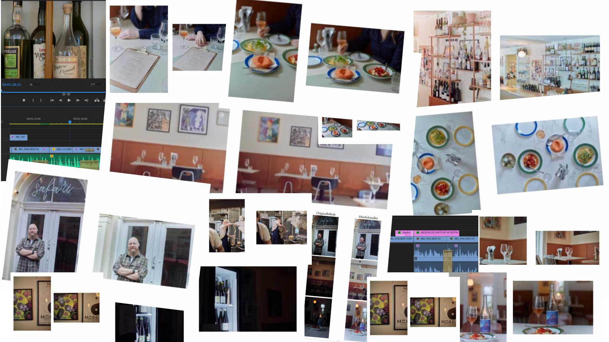

BESKRIVELSE AF TEMA
I temaet "Grundlæggende indhold" fik vi viden om videoproduktion og redigering samt hele for- og efterarbejdet af samme. Første opgave gik ud på, at vi i grupper af 2, skulle producere en 1 minuts lang video om en person med passion for noget. Dette skulle vi se som en øvelse den til næste og større opgave vi fik stillet. I denne skulle vi nemlig i grupper af 4 udarbejde et redesign af en selvvalgt virksomheds website. Redesignet skulle til slut indebære indholdsproduktion i form af selvskabt video og fotos. Vi blev introduceret for SCRUM som vi udarbejdede på trello.com og hjalp os med at tilrettelægge vores arbejdsopgaver over den givne tidsperiode. Vi brugte metoder som bl.a. BERT-test, survey-undersøgelse, tænke-højt test og 5-sekunders test til optimering af website.

DOKUMENTATION FOR PROCES
I den første af de to opgaver (pilotprojektet), valgte vi i min gruppe
at interviewe en gulvlægger ved navn Johnny Ploug. Vi skulle lave et
interview samt filme b-rolls med betydning for historien. Filmen
skulle starte i et establishing shot og derudover have min. 5 klip med
min. 3 forskellige framings.
Vi startede med at planlægge hele processen i form af synopsis og
storyboard, og havde nu bedre overblik over hvad vi skulle nå på
produktionsdagen. På denne dag vidste vi nemlig præcis, at vi skulle
filme selve interviewet af Johnny i hans arbejdskælder, for bl.a. at
give seerne et bedre indblik i hverdagen som gulvlægger, men også for
at få den optimale ro og ikke blive forstyrret af larm fra biler eller
maskiner. Dette kunne vi nemlig tillade os i de b-rolls vi tog, da vi
blot valgte at sætte musik over disse. Vi fik lov at komme med Johnny
og hans ansatte ud på en normal arbejdsdag i Hvidovre, hvor vi filmede
dem slibe og lakere gulve.
I den efterfølgende proces, skulle vi bruge vores viden fra
klippeøvelserne og teorien heraf til at klippe filmen sammen, og
herefter indsætte den i det website vi havde lavet tilhørende denne
opgave.
Se website her

DOKUMENTATION FOR PROCES
I den endelige opgave kom min gruppe og jeg hurtigt i kontakt med
ejerne af Restaurant Safari på Nørrebro, som takkede ja til at få
lavet et redesign af deres website. Da aftalen var i hus, begyndte vi
på alt forarbejdet der lå og ventede. Vi startede ud med at lave en
gruppekontrakt efterfulgt af et SCRUM på trello.com til vores daglige
scrum-møder. Her fordelte vi os på de forskellige opgaver som bl.a. at
lave skitser, sitemap, wireframe, layoutdiagram, moodboard og
styletile, hvilket gjorde den efterfølgende proces nemmere og mere
overskuelig.
I preproduktionen planlagde vi ydermere hvordan optagedagen på
restauranten skulle forløbe. Vi lavede synopsis med storyboard og
produktionsplan til filmene samt plan for still-fotos. Vi planlagde
her, at få så mange forskellige framings fra restauranten som muligt
til b-rolls mens at interviewet skulle foregå det samme sted med en
rolig baggrund, så seerne ikke ville blive forstyrret. Vi havde her
udarbejdet en interviewguide.
Se dokumentationsdokument her
Til redesignet af websitet brugte vi Github og Netlify som bruges når
man skal samarbejde om f.eks. at lave et website. Dette var essentielt
i denne opgave, da vi hver især skulle stå for en side af redesignet
for Restaurant Safari. Udover designet, producerede vi nye tekster og
ny microcopy til vores sider. Jeg stod for siden "Galleri" med
tilsvarende css til.
Se produktet her
Til slut skulle vi foran andre grupper samt 2 lærere pitche vores idé.
Dette var en god måde til at blive stærkere i at formidle og sælge et
produkt, og vi fik en masse brugbar feedback som jeg vil tage med mig
i mine kommende opgaver.
Se pitch her